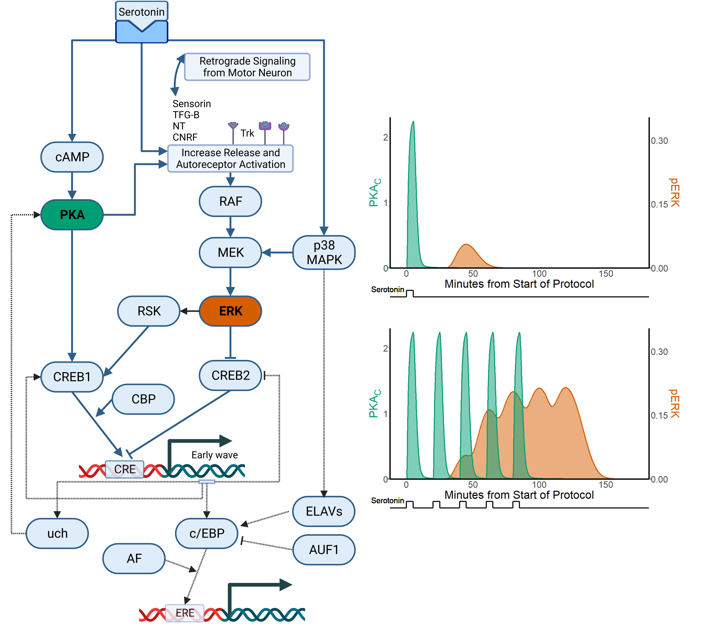

4 Induction: Why do only some experiences activate transcription to encode long-term sensitization memories?
Limited sensitization training (a single shock) produces only transient neural plasticity and a sensitization memory that rapidly decays. More extensive training (5 shocks) activates changes in neuronal transcription, produces long-lasting neural plasticity, and encodes a long-term sensitization memory. What mechanisms link long-term sensitization training to the activation of transcription, and how do these mechanisms discriminate between different training protocols?
4.1 Long-Term Sensitization Induction Depends on Synchronized Activation of Two Nuclear Signaling Pathways

Intensive study of the cellular models of sensitization has helped provide detailed answers to these questions. The consensus model that has emerged is that long-term sensitization requires activation of two inter-related signal-transduction pathways that regulate transcription, and that the effectiveness of different training protocols is based on the degree to which activation of these pathways is synchronized. Figure 5 provides an overview of this synchronization-based model of the induction of long-term sensitization:
Noxious shock activates serotonergic neurons. The released serotonin activates metabotropic receptors expressed by Aplysia nociceptors, producing a complex local signal-transduction cascade that rapidly but transiently induces the physiological changes that help express short-term sensitization. This includes activation of calmodulin-dependent protein kinase (CamKII), protein kinase C (PKC), and the cyclic adensosine-3-monophasphate (cAMP) to protein kinase A (PKA) pathway (Byrne and Robert 2015).
The impact of serotonergic modulation is not only local, but also activates signals that can translocate to the nucleus to regulate gene expression. These signaling pathways are complex, but include:
Activation of the cAMP/PKA pathway, producing a rapid but transient translocation of the catalytic subunits of PKA to the nucleus (Bacskai et al. 1993; Müller and Carew 1998; Zhang et al. 2021)
Activation of MEK (MAPK/ERK kinase), which phosphorylates the extracellular signal-related kinase (ERK) isoform of mitogen-activated protein kinase (MAPK); this produces a delayed translocation of ERK to the nucleus (Philips et al. 2013; Zhang et al. 2021)
The nuclear signals initiated by serotonin exposure converge on the phosphorylation of two key transcription factors: Aplysia homologs of the transcriptional activator cAMP response element binding protein [CREB1; Bartsch et al. (1998)] and the transcriptional repressor CREB2 (Bartsch et al. 1995). Both of these basic leucine-zipper transcription factors bind to cAMP-response elements in the promoters of diverse genes but have opposing effects on the expression of their target genes: CREB1 shows low basal activity, and its phosphorylation enhances expression of its target genes; CREB2 is constitutively active as a repressor, and its phosphorylation relieves this repression.
Long-term impacts only occur with training protocols that activate the cAMP/PKA pathway around the same time that ERK is activated (Philips et al. 2013; Zhang et al. 2021). This stabilizes activation of these pathways, producing sufficient CREB1 activation and CREB2 de-activation to produce an immediate-early wave of transcriptional change. This immediate-early wave of transcription increases the expression of effector genes and recruits additional transcriptional factors, including an Aplysia homolog of CCAAT Enhancer Binding Protein [c/EBP; Alberini et al. (1994)] and Aplysia Activating Factor [AF; Bartsch et al. (2000)], producing a complex transcriptional cascade.
This transcriptional cascade organizes the expression of the lasting physiological changes that help encode long-term sensitization memory in Aplysia nociceptors. This includes global changes, such as long-term enhancement of excitability, as well as selective modification of synaptic properties through signaling cascades that enable recently-activated synapses to capture transported mRNAs for localized protein expression (Casadio et al. 1999; Martin et al. 1997).
According to this model, even a single learning event (shock or serotonin exposure) sets in motion all the mechanisms required to form a long-term memory (including PKA and ERK activation), but does so sequentially, and thus cannot, on its own, unlock the transcriptional changes required for long-term memory. Successful learning thus requires multiple rounds of training timed in a way that produces activation of PKA and ERK at the same time. Although much remains to be discovered, this synchronization model of long-term sensitization provides a biochemical basis for the apparently universal superiority of spaced training over massed training and has proven to have remarkable predictive powers. Given that the transcription factors that play a central role in this model, CREB1 and CREB2, are implicated in long-term memory formation across the animal kingdom (Kandel 2012; Silva et al. 1998), this detailed understanding of the requirements for long-term sensitization in Aplysia may have broad implications for understanding learning in general. In the remainder of this section, the key components of this model are described, along with selective review of supporting evidence.
4.2 Serotonin produces rapid but transient activation of PKA that is stabilized and extended by repeated exposure
Intensive study has shown that the pathways linking serotonergic signaling to the phosphorylation of CREB1 and CREB2 are remarkably complex. What initially seemed like two parallel pathways (PKA -> CREB1 and ERK -> CREB2) has been shown to involve entangled signal-transduction pathways with complex feedback loops and potential functional redundancies.
The “fast” cAMP/PKA pathway is also the most straightforward. Serotonin activates metabotropic receptors positively coupled to the activation of adenylyl cyclase (Cohen et al. 2003; Y.-S. Lee et al. 2009), leading to an increase in the production of cAMP (Bernier et al. 1982). cAMP promotes the separation of the regulatory and catalytic subunits of PKA (Bacskai et al. 1993). Once translocated to the nucleus (Bacskai et al. 1993) the catalytic subunits of PKA phosphorylate CREB1 (Dash and Moore 1996), helping to trigger the transcriptional changes that help encode a long-term sensitization memory. The critical involvement of the cAMP/PKA pathway in long-term sensitization is well established: The long-term effects of serotonin are mimicked by treatment with cAMP (Nazif, Byrne, and Cleary 1991; Schacher, Castellucci, and Kandel 1988; Scholz and Byrne 1988) or the catalytic subunits of PKA (Chain et al. 1999).
Studies comparing the effects of short- and long-term protocols show that activation of PKA is rapid, with an increase in free catalytic PKA evident almost immediately after serotonin exposure (Müller and Carew 1998; Zhang et al. 2021). With short-term protocols (a single pulse of serotonin), activation of PKA is transient, fading within 15 minutes. Repeated serotonin exposure produces not only repeated PKA activation but also stabilization, extending PKA action to more than 1 hour after induction.
4.3 Serotonin produces a complex and delayed activation of ERK that is terminated by P38 MAPK activity and stabilized by repeated exposure
In addition to activating the cAMP/PKA pathway, serotonin promotes phosphorylation of ERK (Michael et al. 1998), activating its ability to translocate to the nucleus to regulate transcription (Martin et al. 1997). In contrast to the cAMP/PKA pathway, activation of ERK is highly complex and “slow”, features that are probably related. In terms of time-course, a single pulse of serotonin produces ERK phosphorylation that does not develop until 45 minutes after exposure (Philips et al. 2013). This activation then fades very rapidly, by 60 minutes after exposure. This very tight window of activation is produced by parallel activation of the competitive P38 isoform of MAPK (Zhang et al. 2017). With long-term protocols, ERK activation is stabilized and extended for at least 3 hours after training (Sharma et al. 2003; Ye, Marina, and Carew 2012). The activation of ERK has been clearly established as a requirement for long-term sensitization. For example, the long-term effects of serotonin are blocked by manipulations that block ERK activation [Martin et al. (1997); @shobe2016].
The delayed activation of ERK is probably related to the fact that its induction involves complex signaling cascades that integrate extracellular and retrograde signaling. Serotonin stimulates secretion of several different signaling molecules from Aplysia nociceptors, including Aplysia homologs of neurotrophin [NT; Kassabov et al. (2013)], a cysteine-rich neurotrophic factor [CNRF; Pu et al. (2014)], transforming growth factor β [TGF-β; Q. R. Liu et al. (1997)], and the peptide neurotransmitter sensorin (Hu et al. 2004). These changes in neurosecretion activate autoreceptors, including tyrosine receptor kinases (Trk receptors). This autoreceptor activation is key for then activating the “classic” pathway for ERK activation (RAF -> MEK -> ERK). Thus, serotonergic activation of ERK requires a cascade of extracellular and intracellular events. Blocking TGF-β signaling, TrkB-receptor activation, or sensorin secretion during training blocks both ERK activation and long-term plasticity (Hu et al. 2004; Kassabov et al. 2013; Kopec et al. 2015). Adding even more complexity, these neurosecretory signaling pathways are influenced by retrograde signals from synaptic partners, as both long-term facilitation and increased sensorin expression in Aplysia nociceptors depends on protein synthesis and calcium signaling in post-synaptic motor neurons (Cai, Chen, and Glanzman 2008). The way serotonin initially triggers neurosecretory signaling is not entirely clear, but likely involves PKA, as blocking serotonergic activation of PKA blocks serotonin-induced ERK phosphorylation (Zhang et al. 2021).
The effects of ERK signaling are also complex, producing phosphorylation of not only CREB2 but also CREB1. The involvement of ERK in CREB2 phosphorylation was discovered first, with a notable increase in phosphorylation produced by co-incubation of Aplysia CREB2 with an activated form of ERK (Michael et al. 1998). It has been shown that phosphorylation of ERK is accompanied by activation of the P90 ribosomal S6 kinase (RSK), which then promotes the phosphorylation of CREB1 (R.-Y. Liu et al. 2020). Blocking RSK diminishes CREB1 phosphorylation and the long-term effects of serotonin, suggesting that the ERK pathway makes an important but not necessarily dominant contribution to the activation of CREB1.
4.4 Synchronization of PKA and ERK activation is critical for the induction of long-term sensitization.
Research comparing short- and long-term training protocols suggests that the key factor for producing long-term sensitization is the degree of synchronization between serotonin-induced PKA and ERK activation. This hypothesis was developed, in part, by the observation in intact animals that long-term sensitization could be produced by just 2 shocks spaced 45 minutes apart, but not by slightly shorter (15 minutes) or longer (60 minutes) training intervals (Philips, Tzvetkova, and Carew 2007). This narrow temporal window was found to be reflected in the delayed but transient phosphorylation of ERK produced by the first training stimulus. This led to hypothesis that the two-shock protocol succeeds in producing long-term sensitization only if the second shock is timed to re-activate PKA in the narrow time window of ERK activation from the first shock. Consistent with this hypothesis, preventing the first shock from producing a late-developing activation of ERK prevented a second shock from producing long-term sensitization (Philips et al. 2013). These findings strongly suggest that the key switch from short- to long-term sensitization is training that synchronizes the nuclear signaling induced by serotonin, producing PKA activation around the same time as ERK activation.
The synchronization model of the induction of long-term sensitization has also been validated by computationally modeling parts of the PKA and ERK pathways and then testing predictions derived from these models. In one study, an abstract model of the PKA and ERK pathways was developed and fit to empirical measurements of PKA and ERK activation from single pulses of serotonin (Zhang et al. 2012). The model was then used to explore a broad parameter space of possible stimulation protocols. This exploration identified an idiosyncratic training protocol (5 pulses with inter-stimulus intervals of of 10, 10, 5, and 30 minutes) predicted to produce more temporal overlap of PKA and ERK activation than the standard long-term training protocol (5 pulses of serotonin at even 20-minute intervals). Remarkably, real-world testing of this idiosyncratic protocol in the cellular model of sensitization produced stronger phosphorylation of CREB1 and longer-lasting synaptic facilitation at Aplysia nociceptors; in intact animals shocks applied at the same uneven intervals produced longer-lasting long-term sensitization of the siphon withdrawal reflex.
Subsequent computational studies have incorporated more of the complex signaling pathways involved in serotonergic activation of PKA and ERK and have continued to generate novel in silico predictions that have then been validated in vivo. In one study (R.-Y. Liu et al. 2013b), the model was extended to represent PKA- and ERK-based phosphorylation of CREB1 and CREB2, and their interaction with CREB-binding protein (CBP) to regulate expression of the immediate-early gene c/EBP. The extended model correctly mimicked the in vivo finding that knocking down CBP expression limits the effectiveness of the standard long-term protocol, producing lower levels of long-term facilitation than under control conditions. The model was then used to search for training protocols that could overcome the reduction of CBP, identifying a predicted rescue protocol with intermittent timing (5 pulses at intervals of 10, 10, 20, and 10 minutes). This in silico prediction was confirmed in culture, with the rescue protocol restoring the expression of long-term sensitization during CBP knock down. Similarly, the impact of reducing CREB1 expression has been modelled and successfully rescued via a computationally-derived intervention (Zhou et al. 2015).
Additional elaborations of the computational model of long-term sensitization include incorporation of serotonin-induced activation of a P38 isoform of MAPK that reduces ERK activation (Zhang et al. 2017) and the addition of both PKA and ERK-mediated RSK activation (Zhang et al. 2021). At this point, the model incorporates many of the complex signaling pathways known to regulate PKA and ERK activation. It has generated multiple validated predictions, offered new insight into the failure of massed training to produce long-term memory, and provided a tool for dissecting the role of different feedback pathways in stabilizing and extending the induction of long-term sensitization. While much remains to be learned, it seems clear that the temporal dynamics by which serotonin activates nuclear signaling plays a key role in determining which experiences succeed in activating transcription to generate long-term memories.
4.5 Activation of CREB1 and de-activation of CREB2 initiate an immediate-early transcriptional response that includes up-regulation of C/EBP
Synchronized PKA and ERK activity converge on the regulation of the transcription factors CREB1 and CREB2. Together, these transcription factors serve as a two-factor key for unlocking neuronal transcription to induce lasting plasticity in Aplysia nociceptors. Successful long-term training protocols achieve sufficient activation of the ERK to relieve the constitutive repression of CREB2 while also activating the cAMP/PKA pathway and RSK to phosphorylate CREB1; this combined action produces an immediate-early transcriptional response, a designation for transcriptional changes triggered rapidly by constitutively expressed transcription factors without the need for intervening protein synthesis.
The immediate-early wave of transcription increases the expression of multiple proteins (Kuhl et al. 1992). One of the clearest readouts is a dramatic up-regulation of C/EBP, a transcription factor which targets genes with an CCAAT enhancer-response element (Alberini et al. 1994). C/EBP is not constitutively expressed in Aplysia nociceptors, but is induced rapidly (within 15 minutes) but transiently by serotonin exposure in cell culture and by noxious shock in intact animals (Lyons et al. 2006). This increase in expression requires translocation of CREB-binding protein (CBP) to the nucleus, where it binds with CREB1 to the promoter of the c/ebp gene, displacing constitutive repression by CREB2 (Guan et al. 2002). Serotonergic activation of C/EBP requires histone acetylation at the c/ebp promoter (Guan et al. 2002) and can be fostered by the nucleolar protein known as activity-induced activation LAPS18-like protein [LLP; Kim et al. (2003); Kim et al. (2006)].
The dual roles of CREB1 and CREB2 in initiating transcription are very well-established. Long-term protocols produce phosphorylation of CREB1 (Bartsch et al. 1998; Chain et al. 1999) and CREB2 (Bartsch et al. 1995), displace CREB2 binding from the promoters of genes it represses while increasing CREB1 binding (Mohamed et al. 2005), and increases the expression of CREB1’s target genes (Kaang, Kandel, and Grant 1993). Manipulations that disrupt CREB1 function completely block serotonin from producing long-term increases in synaptic strength and excitability in Aplysia nociceptors (Bartsch et al. 1998; R.-Y. Liu et al. 2011) while direct injection of phosphorylated CREB1 into Aplysia nociceptors mimics the effects of repeated serotonin exposure (Bartsch et al. 2000). The repressive influence of CREB2 is highlighted by studies which have disrupted CREB2 function; this makes it easier to induce long-term plasticity, enabling short-term training protocols (a single pulse of serotonin) to produce lasting effects (Bartsch et al. 1995; J. a. Lee et al. 2001).